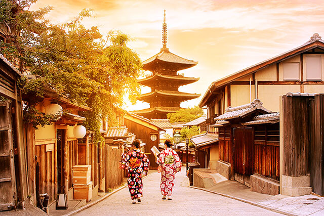

とうきょうと
도쿄,도쿄는 일본의 수도이자 최대도시이다. 인구는 약 1400만명 이며 도쿄를 중심으로 한 일본의 수도권은 세계 최대의 교통 인프라를 형성하고있다.
또한 뉴욕,런던과 함꼐 세계 3대 도시로 불리기도한다.
도쿄의 뜻은 동쪽(東)에 있는 도시(京) 라는 뜻이다.

ふくおかけん
후쿠오카현, 규슈에서 인구가 가장 많은 후쿠오카시와 두 번쨰로 많은 기타큐슈시가 모두 후쿠오카현에 있다.
또한 한국인 관광객들이 오사카,도쿄에 이어 세 번쨰로 많이 찾는 일본의 관광지이기도 하다.
후쿠오카의 이름 유래는 구로다 영주가 살고있던 곳이 현재의 오카야마현의 후쿠오카였는데 이ㄹ따와 자신들이 생활 할 성을 후쿠오카라성이라 이름을 붙이고 그 일대를 후쿠오카라 부르게 하였다.

おさか
오사카, 오사카는 혼슈의 중심 부근에 위치한다. 좁은 면적안에서 많은 사람들이 생활하는, 도쿄에 버금가는 대도시이기도 하다.
또한 일본에 거주하는 외국인의 약 10%가 오사카에 살고 있습니다.
오사카는 원래 '大阪'가 아닌 '大坂'였다고 합니다. 예전에 사용되었던 坂는 언덕이라는 뜻으로 언덕이 많은 오사카 지형을 표현한 것인데, 현재는 불명의 이유로 바뀌게 되었다.

京都
교토시, 일본 도시 가운데 여덟번째로 인구가 많은 도시이며 790년대부터 1860년대까지의 일본 수도이기도 하였다.
교토는 우리나라처럼 긴 역사를 가진곳 입니다. 원래 교토의 이름은 헤이얀코(平安京)이고, 이 뜻은 전황과 국가의 영원한 평화 라는 뜻을 담고 있다고합니다.